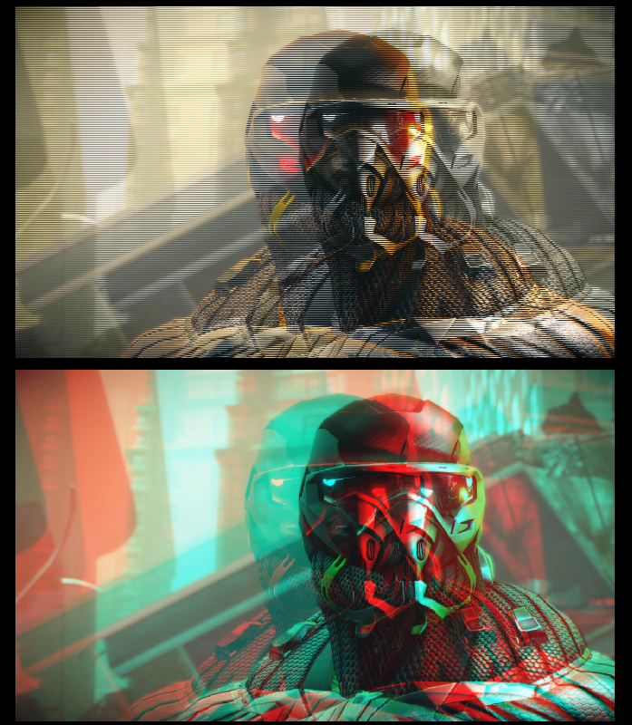
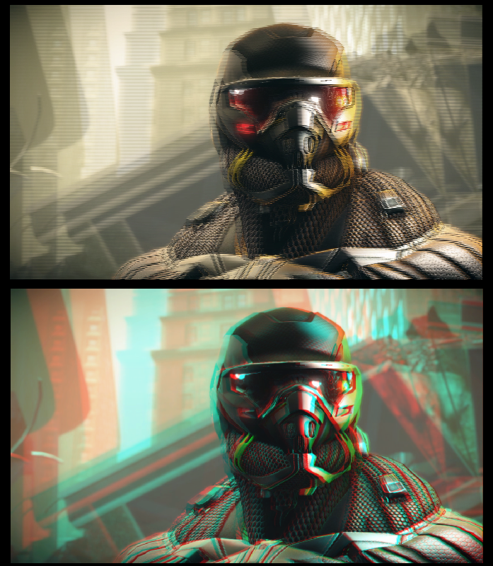
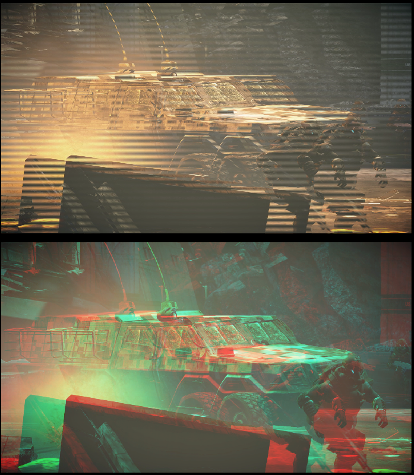
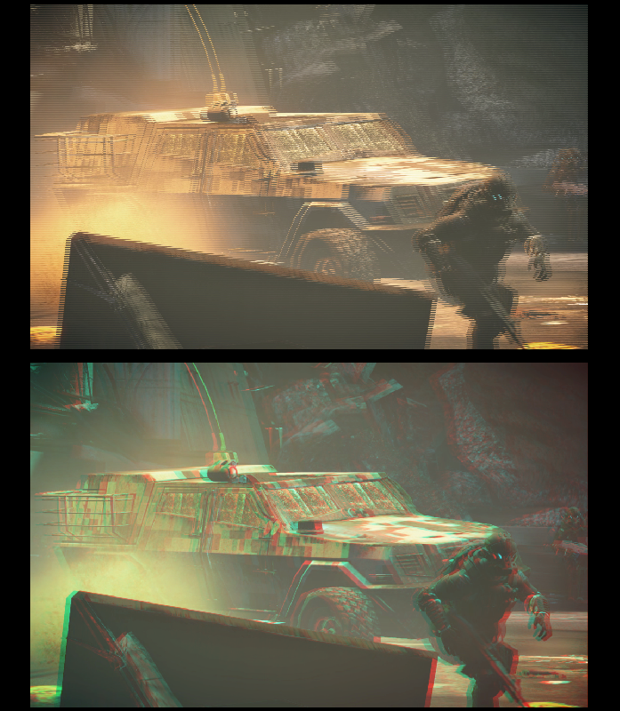
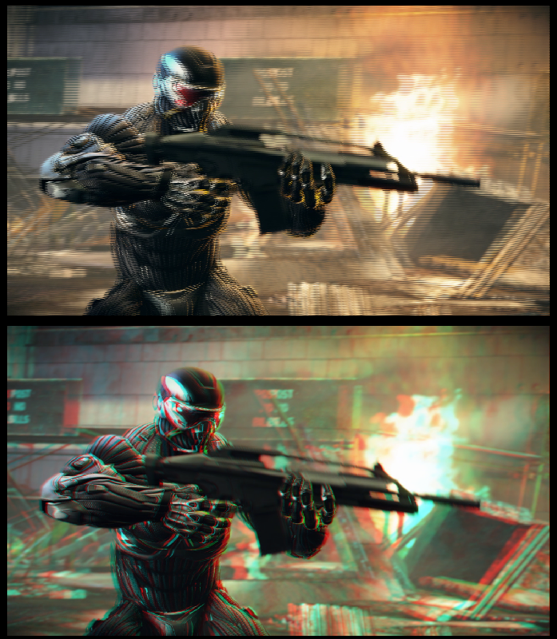
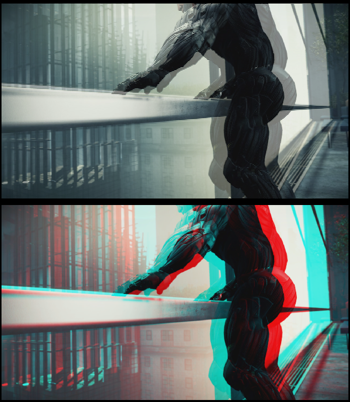
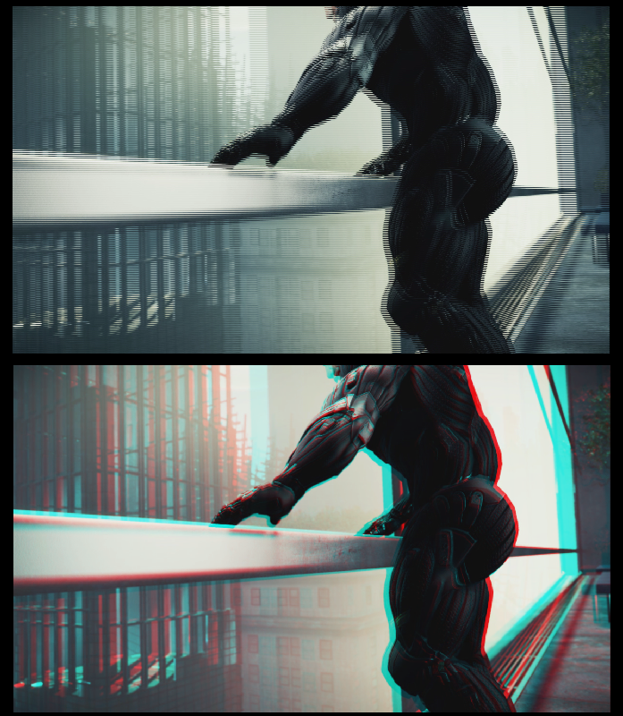

Overview
The only internal project available right now is the Crysis demo so I will use this, but the issues also exists elsewhere, which prompted this article.
The realigned examples are altered in post, this is possible because the camera rig was parallel, but it does re-crop the image.
Here the character is what you are focusing your eyes on, however, the window is not set to his helmet.

Here are some examples with the Stereo Window altered using 'Easy Adjustment' in SPM to the closest object:

Here are some other examples:

The stereo window is so deep, it takes a second to adjust, whereas below, you instantly see and there is less ghosting.


A change like this doesn't alter the image much (depth, crop) but it does improve things a lot on devices with ghosting.

Tough call, I would say set it to the hand, and deal with the violation of the bar, in practice, we should try to keep things from coming this close to camera.
